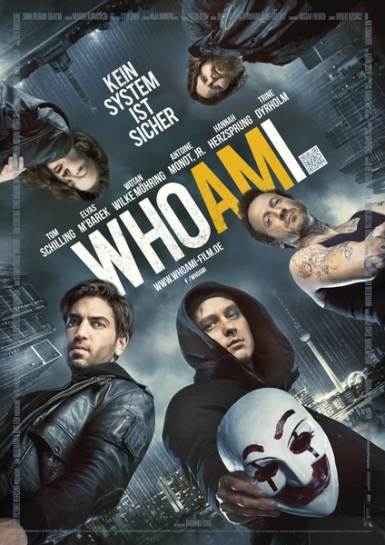

Фильм · 2014 · Драма, Криминал
Берлинский аутсайдер Бенджамин словно невидимка: у него нет ни друзей, ни карьеры, зато есть талант к социальной инженерии. Вместе с тремя такими же неприметными изгоями он создает группу CLAY; их дерзкие акции попадают в мировые новости — и привлекают внимание европейских спецслужб и российского киберпреступника. Следователь, ведущая на них охоту, потеряла семью из-за хакеров, а единственный свидетель, которому она доверяет, совершенно ничего о себе не помнит. Один из лучших фильмов о хакерах: честный рассказ о сообществе, о работе за клавиатурой и о том, что личность — это всего лишь набор данных.
Berlin outsider Benjamin is invisible: no friends, no career — but a gift for social engineering. With three equally unnoticeable misfits he forms CLAY, whose stunts make world news — and then land on the radar of European intelligence and a Russian cyber criminal. The investigator hunting them lost her family to hackers, and the only witness she believes remembers nothing about himself. One of the best hacker films: honest about the community, about typing on keyboards, and about identity being just data.